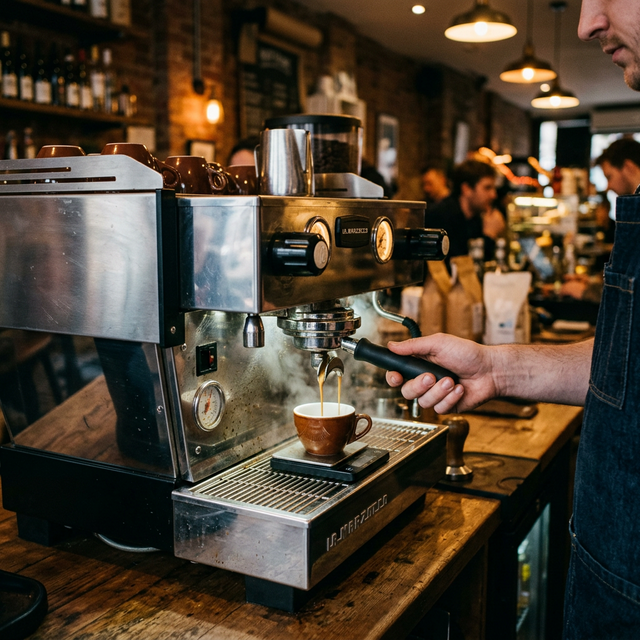
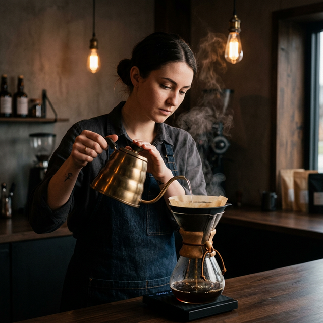

咖啡豆種類
探索來自全球各地的獨特風味與個性。
阿拉比卡 (Arabica)
全球產量最高，佔約 70%。以優雅的酸度、花果香及細緻的層次感著稱。它是精品咖啡的核心，適合追求精緻風味的玩家。
- • 香氣：莓果、柑橘、花香
- • 咖啡因：較低
- • 種植：高海拔地區
羅布斯塔 (Robusta)
堅忍、濃郁。擁有更高的咖啡因與豐富的油脂感，苦味較重，常帶有麥香或泥土味。它是義式濃縮拼配的靈魂。
- • 香氣：堅果、穀物、黑巧克力
- • 咖啡因：較高
- • 種植：低海拔地區
賴比瑞亞 (Liberica)
極為稀有，僅佔全球 2%。擁有碩大的豆形，風味獨特，帶有木質調與成熟果實的木香，呈現截然不同的咖啡體驗。
- • 香氣：木質、煙燻、熟果
- • 咖啡因：微量
- • 特徵：不規則豆形
精品咖啡器材

手沖濾杯 (Dripper)
V60 的旋轉導流能讓萃取更均勻，帶出明亮的酸度；波浪濾杯則提供穩定的流速，適合新手上手。
義式咖啡機 (Espresso)
利用 9 Bar 的高壓萃取，在極短時間內釋放咖啡的精華與油脂，打造濃郁的 Crema 層。
法式濾壓壺 (Press)
經典的浸泡式手法，保留了咖啡中最完整的油脂與醇厚度，口感最為厚實。
專業沖泡手法
01
精確控制 (Precision)
使用電子秤精準測量粉水比，建議比例為 1:15。這是確保每一杯咖啡一致性的第一步。

02
悶蒸釋放 (Bloom)
注入等同粉重 2 倍的水量，等待 30 秒。這能讓二氧化碳排出，使後續的萃取更為通透、乾淨。
03
螺旋注水 (Pouring)
從中心向外緩慢繞圈，保持穩定的水柱。注意注水速度需與濾出速度保持平衡，打造豐富層次。